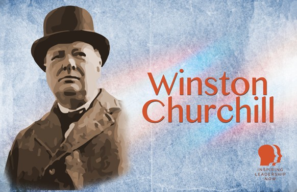

Winston Churchill
Winston Churchill is remembered as one of the greatest leaders of the 20th century, particularly for his leadership during World War II. Born in 1874 into an aristocratic family, Churchill served in the military, became a prolific writer, and entered politics, eventually becoming Prime Minister in 1940 during Britain's darkest days. His wisdom, persistence, and powerful oratory helped guide Britain and the Allies to victory over Nazi Germany. Churchill played a crucial role in shaping the post-war peace and securing a period of prosperity for the Western world.
Churchill’s political career, spanning more than 40 years, also saw him return as Prime Minister in 1951. His speeches, like "We will never surrender" and "This was their finest hour," continue to inspire leaders today. Despite struggling with depression, which he called his "black dog," Churchill used his challenges to fuel his leadership, becoming a symbol of resilience and determination. He was awarded the Nobel Prize in Literature and became the first honorary U.S. citizen. His leadership, vision, and courage have left a lasting legacy.